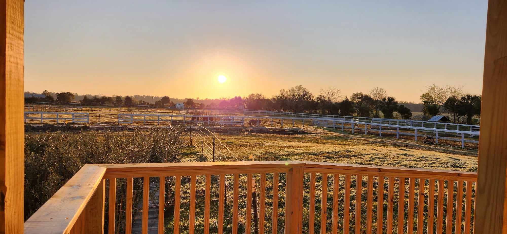
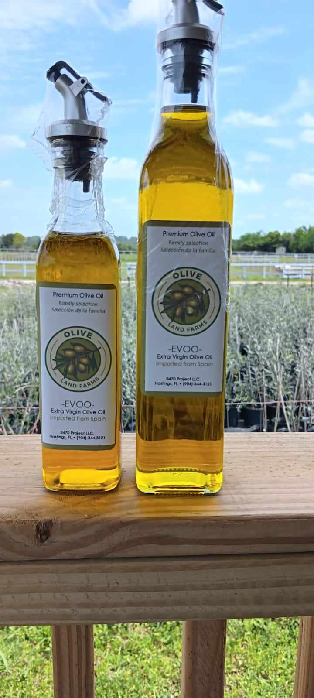

Transformando la longevidad a través de la ciencia, la naturaleza y el bienestar integral.
Centro de Investigación en EcoBienestar, Longevidad Saludable y Calidad de Vida.
No especulamos sobre lo que funciona: lo medimos, lo compartimos y lo escalamos.
Somos un equipo interdisciplinario de investigadores, terapeutas, agricultores y cuidadores unidos por una convicción: la salud mental del adulto mayor puede transformarse cuando la ciencia se encuentra con la naturaleza.
Baños de bosque, senderos terapéuticos, huertos y conexión diaria con entornos vivos.
Intervenciones medidas con metodologías rigurosas y enfoque replicable.
El vínculo humano-animal como herramienta emocional y terapéutica.
Horticultura terapéutica, propósito, memoria, paciencia y símbolo de longevidad.
Valdes Armas integra residencia, centro de día, olivar terapéutico, apiario, senderos, huertos, espacios de espiritualidad y laboratorio de datos.

Vivir más años es importante. Vivirlos con bienestar, propósito y conexión es transformador.
El modelo Valdes Armas propone una forma distinta de entender el envejecimiento: más activa, más humana y conectada con los ciclos de la naturaleza.
El proyecto también contempla una línea de productos derivados del olivo y del ecosistema natural para sostener la investigación, la educación y el bienestar comunitario.
